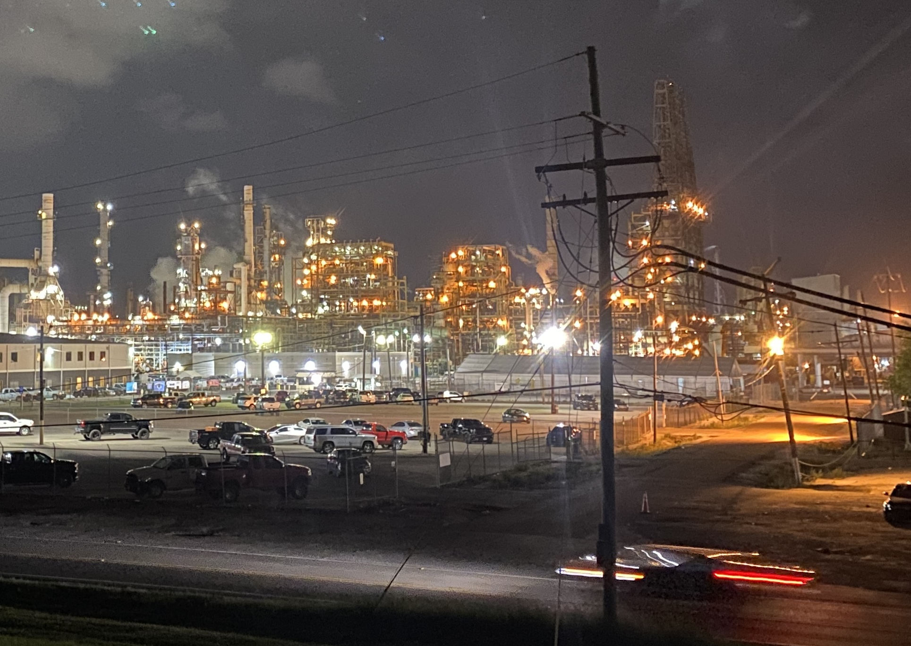
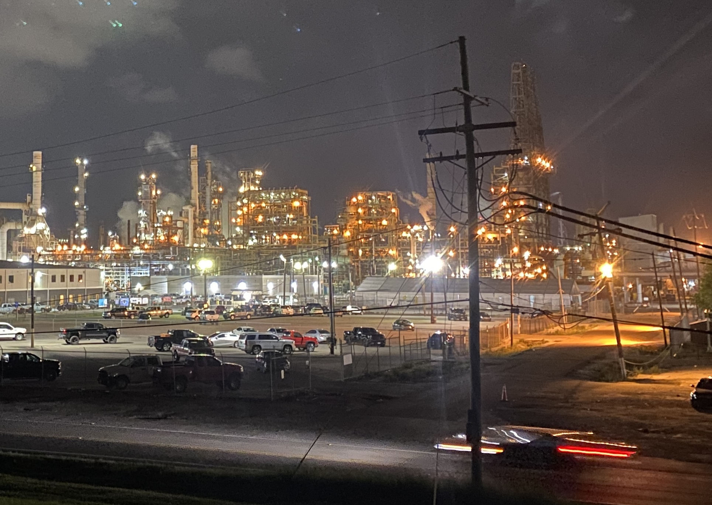
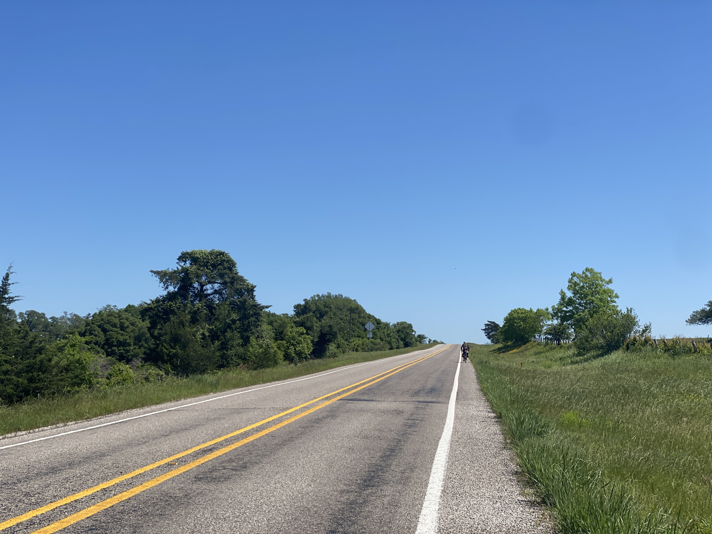
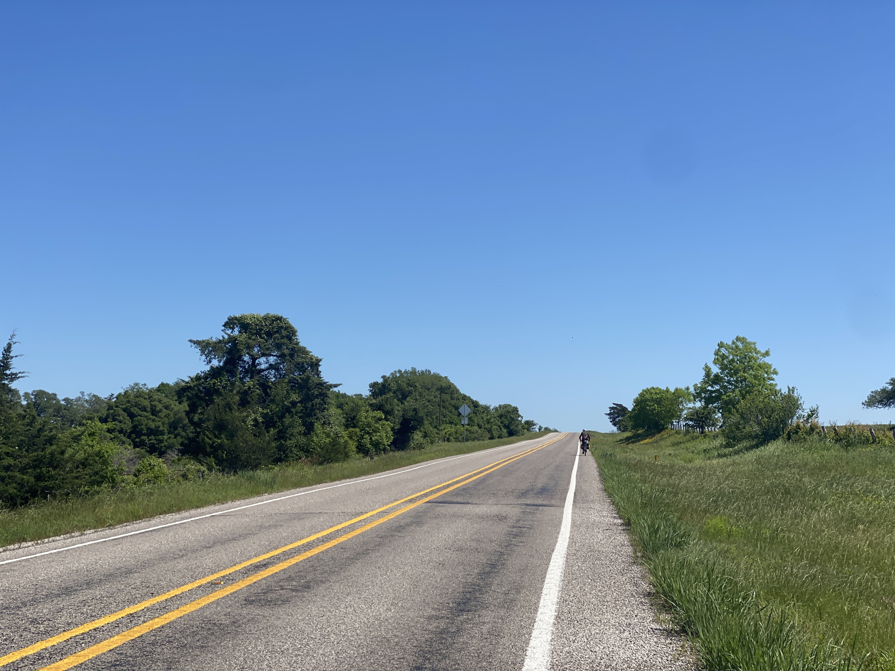
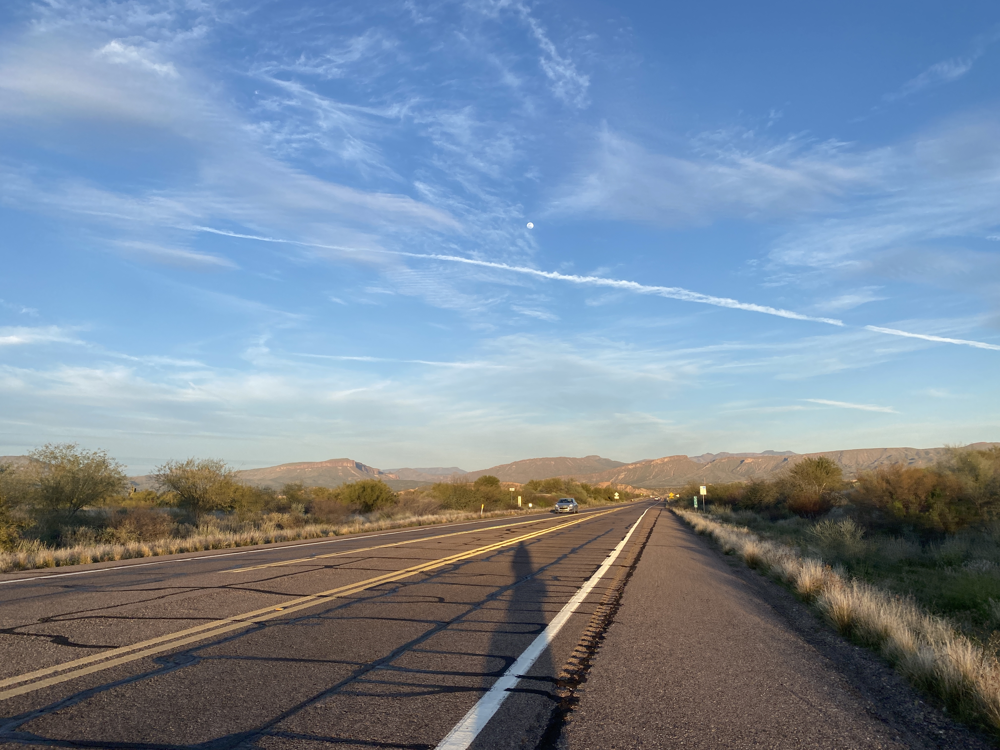
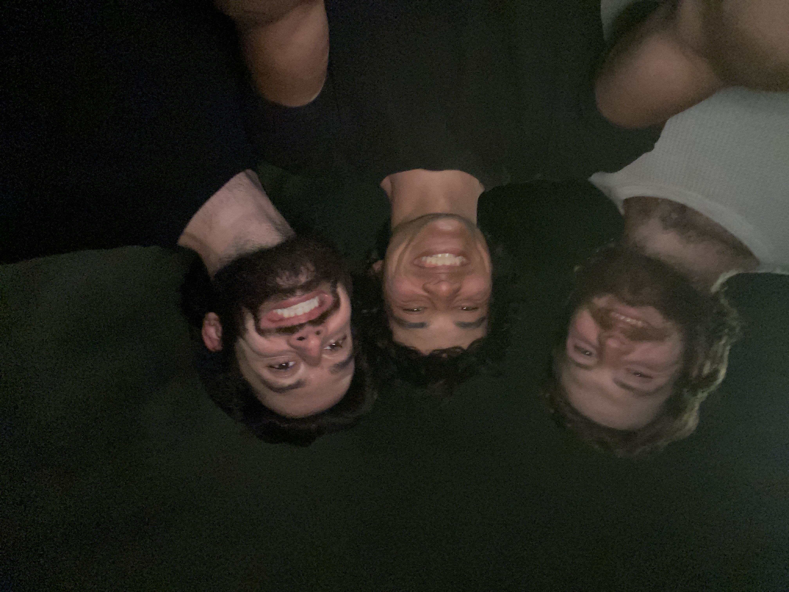
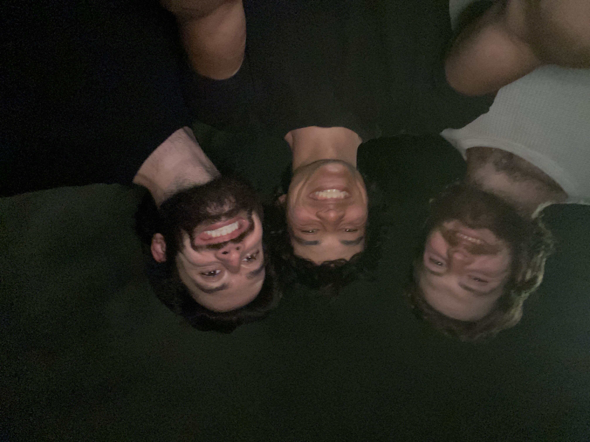

Atlanta, GA > Brooklyn, NY (971 Miles)

Eldon and I arrived in New York on Saturday, the 18th. Lots has happened in the last 970 miles that we'll get to updating at a later date. Until then, a brief summary!
It took us exactly 2 weeks to bike here from Atlanta. By the grace of three generous WarmShowers hosts, we were able to make our way to our good friend Mackenzie who we've been with for the last week. Eldon and I said our goodbyes to eachother on the morning of the 26th. He packed his bike into a big cardboard box, duct taped it to his shoulder, and hopped on the subway. Sean's ride back starts tomorrow. Won't be the same without Eldon. Will be updating slightly less until I make it to Washington, where Eldon and I will be reunited after he's settled in.
-Sean
"Many an exciting and possibly perilous adventure may arise. If so, take a chance on experience. Hook up with you on the other side of the country."
- Rady
Cheaha State Park > Atlanta (100 Miles)

We woke up at 7:30 am to a thunderstorm! Lightning was flashing, cars were crashing, total chaos ensued. After 30 minutes it died down and we made oatmeal and coffee.
. We expedited today's ride by taking the 78 instead of the Silver Comet bike trail. I can't recommend biking on the 78. Lots of traffic and careless drivers. I can recommend stopping at the Rhythm Cafe in Heflin for lunch. Shoutout Shane for the music stories and yummy sandwich!
Towards the evening I had a tiny spill on my bike. I was riding on the shoulder when my tire got caught where the pavement meets the weeds- that area sometimes forms a steep concrete lip. It felt like getting a wheel stuck in a cable car track. I lost steering control and skidded off my bike into the street. Luckily, no cars were nearby and I walked away with a few scrapes and no damage to the bike. Today's lesson: stay away from were the gravel meets the grass!
Big thank you to my step-brother, Mike, for letting us crash with him for a few days. He took us to our first capoeira class, showed us around Atlanta, and gave us a warm place to rest our heads. Hope you beat God of War soon!
Sylacauga > Cheaha State Park (46 Miles)

Sleeping in a motel definetly causes us to relax a bit too much to get out early in the morning. We got going around 12 pm. Taking the Al 148 East up into the ridges of the southern end of the Appalachian mountain range, we met up with the Longleaf section of the Eastern divide again.
This was a rutty Jeep trail with a steep climb to the top. I was loving the more technical riding, getting a few jumps in every once in a while. Stopped for lunch at an old fire watch tower. My smoked mussels that I'd put off eating since Cali popped in my food bag. Pro-tip: bite the bullet and eat the mussels.
Eldon

Today I decided to confront my fear of heights and climb to the top of an old rickety watch tower. Definitely worth the view, like a scene from a Miyazaki film!
"Height" was the word of the day today. We climbed up to Cheaha State Park, the tallest mountain in Alabama clocking in at 2,407 ft. above sea level. My favorite part about biking for miles uphill is knowing I get to coast downhill eventually!
Sean
Talladega National Forest > Sylacauga (89 Miles)

Biking out of the lower Talladega National Forest we forgot to buy more food for the day, so about 40 miles out from our destination depletion started hitting. I drank the chilli I'd planned to eat that night to keep me going and biked with all the strength I could muster to get into Sylacauga, where I devoured many protein bars and many bean burritos.
Eldon

We nearly set up camp next to a stream last night, but after my swollen eyelid incident we decided to sleep away from any kind of water source. We settled on roadside flatground and woke up bug bite free.
Scenic ride all day through the national forest. Eventually we were spit out onto farm roads. I caught up to Eldon as he was eating his chilli, and I ate a can of peaches beside two noble stallions. Hooved mammals are great snacking companions.
Sean
Evergreen > Talladega National Forest (85 Miles)


We left from Owassa RV Park that morning and passed through historic districts of Alabama. The heat was starting to pick up by noon, so we stopped for a dip in the Pine Barren Creek to cool off.
We arrived in Selma around dinner time. Crossing the Edmund Pettus bridge was surreal- I'd only ever seen it in black and white videos crowded with activists. Very grateful to have biked across a bridge that supported steps far heavier than any car.
Sean

Lotta old dogs trynna keep up with us young bucks. There were two good boys who did just come out to say hello, waggin' tails and all.
Had fantastic BBQ twice today, first time in Furman at the Food Mart. I ate so much I needed thirty to balance my stomach. Second time was on the southside of Selma on the corner of CR77 and US 80. Both places fantastic traditional no bullshit reasonably priced meats and sides. Thank you.
Eldon
Hurricane Lake > Evergreen (70 Miles)


More gravel trails today! The backroads we took were packed with red clay and lightly shaded with tall bushes. We rode along the contrasting colors until we stopped for lunch at the Sweet South Market in Andalusia. We were generously gifted various peanut preparations to take with us on the road. Lovely pit stop!
Sean
Pensacola > Hurricane Lake (58 Miles)


We woke up early and had coffee with Sara. She shared stories of her bike trips, and we helped trouble shoot a finnicky quick release on her new bike build. In the excitement of bike talk, I left without packing my toilettries bag. Sara was kind enough to drive it over to me before I got too far away <3
We stopped over at Truly Spoken for a quick wheel true and to top off the air in our tires. Then we headed over to Mama Latte's for lunch before hopping on the beautiful Blackwater Heritage State Trail.
On our way up to Hurricane camp, we ran into a fellow cyclist named Frank. He accompanied us all the way to our site and made sure we got there safely. One of the prettiest sites we've stayed at so far!
Sean
Something to add to this day is for maybe a 15 mile stint we hit forest service roads. It hadn't rained in a few days so large portions were sandy and it turned into hike-a-bike a few times. I felt betrayed by the route I'd propposed but it payed off later with some killer views and fun gravel.
Eldon
Shepard State Park > Pensacola (112 Miles)

Mosquitos devoured me overnight. I woke up with a swollen eyelid and biked all morning with one working eye. I walked into a Waffle House and got lots of funny looks. Big thank you to Perry for footing the breakfast bill! Opened my eye up to the seemingly endless delights of human kindness.
After breakfast we biked along a causeway and onto the Dauphin Island Ferry. This had been our first time on public transportation so far and was a nice 5-mile rest.
I made phone calls on the way to Pensacola and caught up with family. Always a morale boost to hear their voices. Bonus morale boost: we found a Warmshowers host to stay with that night! Big thank you to Sara for letting us crash out in the backyard after a long day!
Sean

This day I finally felt like I was back in my groove with the bike. Honestly going through vacation towns evokes little intrest to us. All it looks like is $$$.
On a different note, talking to loved ones really does keep me going. I'm very grateful for my girlfriend. Talking to her almost everyday keeps me going and I can not wait to see her when I'm back. Talking with my family also fills my cup when it's low. I miss my mommy and daddy hehehe, but for real! I wouldn't have had the tools to do this without them. I love you both.
Eldon
Buccaneer State Park > Shepard State Park (58 Miles)

This was the first time we'd seen the ocean since California, and our first time ever seeing the Gulf of Mexico. We biked 20 miles into Biloxi and stopped at the local bike shop. My drivetrain had been skipping in my highest gear, so I had to swtich out my cassette.
Thanks to Biloxi Bikeworks for the repairs, and to Tri Hard bikeshop for drinks and conversation.
Sean
Slight head winds, full sun, and slow going. I can not stress how fantastic of a shop Tri Hard is. A huge thank you to the owners Duncan and Gretchen, and mechanics Mike and Chuck! We camped at Shepard State park that night. While Sean went off in search of a shower I tried to dissuade a band of raccoons from getting too close to our food free tent.
Eldon
New Orleans > Buccaneer State Park (60 Miles)


It was hard to leave New Orleans after meeting so many wonderful people- all the more reason to visit again! After one last coffee at Flora's cafe, we set off. Our route was going smooth until we were halted by a flooded backroad that was deceptively deep.
Eldon caught two scenic flats: one in a grassy freeway field, and another under a mullberry tree. After patching them up, the rest of the ride to camp was spent figuring out how to move to New Orleans!
Sean


New Orleans definitly holds a special place in my heart. What made it so hard to leave was the people. Their kindness, generousity, and ability to share in a good time is unlike any place I've been.
It was definitly a somber ride out. Each of those flats made me feel like something was trying to keep me in the city.
After we'd finally passed the port, train yards, and the divergencce of the US 11 and 90, we hit sea-level marshes going east. We sneakily biked through blocked-off sections and a series of rusted out bridges into Mississippi.
At a gas station in Pearlington, we met a long time resident, Lydell (A.K.A. Trigger Man/ Big Dude with the Eye Patch). Good people met good people and he told us of gas station BBQ spot down the road we needed to stop at. 10/10 gas station food. I got nothing to report on our campsite execpt that it was free but the bugs were plentiful and vicious.
Eldon
6 Days in New Orleans

Our original plan for this bike ride was to end our trip in New Orleans and ship our bikes back to California. We decided later on that we'd continue riding together up to New York and finish there.
However, the more time we spend here, the more it feels like we were meant to stay. The city has greeted us with open arms, and everyone we've met has been gracious, inclusive, caring, and hospitable. I've yet to experience a city that can match the kindness found here.
I could write about each person we've met in detail, and one day I will, but with limited time I'll boil it down to a thank you.
Thank you especially to Frank for sharing his stories and inspiring us to continue writing our own. For inviting us to participate in Otis Fennel's celebration of life. For making us feel at home in a place far from it.
Baton Rouge > New Orleans (106 miles)
 

Eldon is a very fast cyclist. His gear ratio, bike weight, and surplus of energy allow him to move at a much quicker pace than myself and most other cyclists we've met on the road. He's also a fantastic navigator; he bikes ahead and often waits up for me at major turns in our route. I've learned to appreciate biking with someone who moves at a faster pace. Eldon encourages me to push myself. His stamina is contagious and makes longer days like this feel more attainable.
The last 20 miles of biking into New Orleans was all excitement. I fooled myself once or twice, mistaking the oil refineries for the lights of the city. Eldon and I biked side-by-side along the Mississippi river, Blink-182 and Panic! at the Disco blaring through our earbuds.
Sean
Ate a killer killer breakfast at the Waffle House on the way out from Baton Rouge. Our waitress had a sweet sense of humor, she liked messing with Sean. We only did about 40 miles of the 107 miles that day together. I had non-stop flats as soon as we hopped onto the 30 south bound. Finding a clean line through debris is a never-ending battle.
When we'd crossed the Mississippi the day before, we'd stopped for lunch at this grill spot. There'd been a map on the wall of all the old plantations on the river. During today's bike down on the levee, I noticed a good amount of those old lots were now oil refineries. For portions of the ride we were practically biking through their facilities. Underneath the sky bridges, out takes, and conveyors. Good day for heavier music.
Got into the city around 11pm (that's a lot of power) and dropped into the Quisby, a hostel right at the edge of the Garden and the CBD. Met some truly fantastic people right off the cuff. JD, Robby, and Jasmine. We talked about the trip at some length, then Sean and I ate two whole Pizzas.
Eldon
Bunkie > Baton Rouge (107 miles)


Breakfast this morning was a 2 minute bike from the firefighters. They recommended we eat at the Shell station. Thanks, Copin. Two ham, egg, and cheese sandwiches, two biscuits, a donut, coffee, and orange juice for $15. Money goes a long way the further we get from the bay area.
The gas stations out here are special, this one especially. A lizard hung out on Eldon's bike as we downed our electrolytes. Soon after we finished our drinks we met Mary-Anne, a very sweet lady who prayed for our safety during our trip. She also gave us a prayer cloth for protection. It's worked so far.
We got lucky with our first Warm Showers host on the trip so far. Scott was a gracious, generous, and knowledgable host. He showed us around LSU, took us out for a bite, and let us stay under his roof. People like Scott inspire altruism and keep it alive and well.
Sean
DeRidder > Bunkie (105 miles)

Sean is a fantastic riding partner. He always is down for the long days. He'd realized that we could get to New Orleans in three days if we started doing 100 mile days. This ride was quite gorgeous. We rode by the rice and crawfish fields of central Louisiana right at the peak of the season. We'd gaze out and see the whites of egrets poking out over the rice fields. The clouds reflected in the waters making the world appear as if it were floating. We knew that we'd be ending around 10 pm that day. Night fell right around Ville Platte.
North of town we entered a forest with very tight tree cover. The trucks of 25-year-old pines ticked past us. When we left the forest, we kicked up our pace and were hitting around 25 miles an hour through the dark into Bunkie.
After a hardy meal at McDonalds, we head to the fire station, which our dear friend Simon recommended. When we arrived, the firefighters' were playing Uno. Luckily, we didn't startle them too bad, haha. They were very accomodating.
Eldon
Kountze > DeRidder (95 miles)


This morning we learned that the freeway we needed to take to get to Silsbee from Kountze was flooded. The damage left by the storm that we caught back in Bastrop was still being mended. We took a 5 mile detour around the underwater highway and eventually made our way into Silsbee.
We stopped for a snack in Silsbee at a newly opened place called Fresh Start. One of the few restaurants in Texas that serves fresh fruits and vegetables. We chatted with the owners and persuaded them to consider dedicating a drink to bikers on the Southern Tier.
On the border of Texas and Louisiana lies Kirbyville. We stopped at a gas station where me met John, a bike enthusiast and kind person. I wish I'd better photographed his bike. It's an old Diamondback that he inherited from someone who had recently passed. I'd like for someone to ride my bike when I die too.
Today marked our fourth border crossing and our first time in Louisiana. Eldon caught a flat not 10 minutes after riding past the welcome sign.
Sean
Riding into Louisiana out from Kirbyville I caught another flat. It was a 1 1/2" screw. That night we stayed in DeRidder, a town famous for the most churches in the world. Our accomodations where by far the worst they'd been, but did the job.
Eldon
Cagle > Kountze (90 miles)
Leaving Cagle in the morning with long shadows cast on highway 1375. Early start for a long day.
Stopped for lunch at the Hickory Pit BBQ & Burger House in Coldspring. Outside we spoke with Jim and Louise, a couple from Houston, through mouthfulls of pulled pork and sweet tea. We hadn't taken any napkins outside with us, so Louise brought us a few. She explained that her motherly instinct kicked in when she saw our hands and faces covered in sweet barbecue sauce. I'm comforted by the knowledge that there are mothers looking out for us on the road. I miss mine.
Eldon's wheel got friendly with a roofing nail and forced him to take a roadside pause. I read my book under a tree as he fixed his flat.
Arriving in Kountze with no place to stay, we decided to camp out in front of the neighborhood Baptist Church. Roy Brown, photographed next to Eldon Brown, told us about a buddy of his who could lend his shower the next morning. We never did meet his buddy and were stinky all day.
Sean
Yegua > Cagle (75 miles)
 


Breakfast this morning was 3 packets of oatmeal, peanut butter, chopped chocolate, and coffee. Much tastier than last night's tuna and bean tacos.
We rode on the empty highway until we arrived in Navasota. We were stopping for burgers when we met Tom. He bought us old fashioned milkshakes and told us about his touring adventure from Ohio to California.
Still searching for food after milkshaskes, we went across the street to Classic Rock Coffee Co. & Kitchen. There we met Joy and Rod, two motorcyclists from Houston. We talked about Glen Campbell, motorcycles, and bike touring over our sandwiches.
After 2 hours in Navasota, we continued our ride into the Sam Houston national forest. We arrived as the sun sank into Lake Conroe and turned the sky pink. Another lovely day of pedaling.
Sean
The oatmeal was truly fantastic. We road out on a short patch of gravel road to meet up with the 390. We road through Independence, TX, 30-ish miles down the road. It was all plains with wild flowers quilting the hills. Very large oak trees with branches that often sag back into the earth.
Eventually the plains turned to tree farms as we neared the Sam Huston National Forest. I had given Sean about a 17 minute lead in Richards and caught up with him at the entrence to the Cagle Recreation Area. Replenished by a hardy meal of mac and cheese and a hot shower, I slipped into sleep with ease.
Eldon
Bastrop > Yegua (75 miles)


We took off from our campsite and met the lovely owner of the Winchester Depot. We were offered four slices of pizza, two cups of coffee, two t-shirts, and some snacks. We gladly accepted. Some neighborhood dogs joined us as we ate and conversed with the Depot owner.
We kept on through headwinds in Burton. I was a bit ahead of Eldon that day, he'll tell you why. Windy nights are great for drying off sweaty clothes. Yuck!
Sean
The shop in Winchester was great. The owner practically gave away half the store to us. There were this couple of dogs that were apparently frequenters of the espablishment. A few miles later we passed through La Grange, then to Round Top where I had to use the restroom.
We rolled up to this auto service station where the owner, Robert, let me use the restroom. I used it, went across the street, and realized I had left my fanny pack in the bathroom at the service station. I went back to Robert's shop to retrieve it, only to find the restroom locked and Robert gone. Earlier, Robert had mention that a woman came by to feed and water the cats in the evening and used the bathroom sink to do so. I got back to the station and decided to wait for this woman and get my pack. I was really itching to get back on the road. I was trying to pick the bathroom lock when a woman in her 40's pulled into the drive way of her home nextdoor. I told her the situation, she said she hoped I would be able to get it, and we parted ways.
I decided that fiddling with the lock further would look too criminal. After about 15 mins had passed, that same lady came up to me with a whole apple pie, four scoops of ice cream, and best of wishes for Sean and I's adventure. I am very greatful for that pie- it was exactly what my body needed. My appetite was starting to come back as the bloating started to calm.
Eventually that lady came by to feed the cats. Lucille was her name. She was sympathetic to my situation and got me in touch with Pearly, the mother-in-law of Robert. Pearly came down, heard my story, unlocked the door and I was one the road again. Sean had gone ahead to camp where I met him.
He offered me one of the more insane taco combos I've heard of, entailing of tuna, peanut butter, avocado, in a flour tortilla. I politely declined and crashed out.
Eldon
Austin > Bastrop (55 miles)

After big hugs and goodbyes we took off from Mama White's house. I immediately caught a flat tire and had to switch my rear tire out. Eldon's tummy was still kinda messed up. Said hi to some cows on the way over to camp. Very crazy storm that night, hail the size of ping pong balls. An angry gnome shot lightning from his palms. Thank you tent.
Sean
Yeah was still feeling like a balloon. Taking lying breaks and staying up on water were the only ways I could midigate the pain. I visited an urgent care to get some testing done. Left with some mild pain killers, but through them out because the way they made me feel. Biking with noodle legs is not the way, I'd rather just be in pain so I can bbike at a normal pace. I actually was lying infront of those cows enclosure. They seemed very concerned for my well being. In the photo the "S" curve of my fork is quite prominent geez o peet.
Eldon
Fredericksburg > Austin (85 Miles)

I thought yesterday's spring flowers were beautiful but was not at all expecting today's blossoms! Red, blue, yellow, white, and green dusted fields of spring flowers for miles.
Super hilly ride around Dripping Springs. Eldon embodied the name of the river and fell into it. Full bike submersion. Hopped out like a wet cat and got back on the bike cursing the driver that failed to slow down for him enough to cross safely. Luckily his bags were waterproof.
A trip of this nature sparks reconnection with loved ones that have grown in their own paths. No relationship is too old to revisit. And the more time passes, the more impactful a reunion becomes. A place to stay is often just a phone call away. Thank you Mama White!
Sean
Lost Maples > Fredericksburg (80 Miles)

Our last day of riding with Garth and Simon... for now. Eldon and I headed north while they went on to San Antonio. After lots of climbs and descents, we stopped for lunch in Hunt: a brisket slider and a cold shiner. Snickers for dessert! Followed by fields of freshly bloomed spring flowers and boot-lined fences.
We visited Hill Country Bicycle Works and restocked on patch kits and tubes. They proved useful in minutes as Eldon ran over a roofing nail immediately after leaving the shop. After riding through oaks and cacti, we settled down at Lady Bird Municipal Park.
Sean
Camp Wood > Lost Maples (36 Miles)

Today was supposed to be our last morning with our new riding companions. We said our goodbyes at the Dollar General after I guzzled down about a pint of milk with my protein bar breakfast. Sean and I set off in 80 degree weather going through some serious elevation gains and loses. The elevation in the Texas Hill Country never gets higher than around 2000 ft. above sea level, but it fluctuates by about 800 ft. every 2 miles.
20 miles in I started to feel a bit off. When we pulled up to a country store 36 miles later, I realized that I was feverish and fatigued. I felt extremely defeated, but decided that I should stop riding for the day and rest. Do not drink Dollar General milk unless you have a gut of steel.
Eldon
I am very glad I did not drink the Dollar General milk.
Eldon's rumbling tummy turned out to be a disguised blessing: We were able to camp out for another night with Garth and Simon! We set up with the RV's and chatted with he other campers about bike touring. We were told stories of the upcoming beauty of the Blue Ridge mountains. Very excited to see those with fresh eyes in the coming month.
Sean
Del Rio > Camp Wood (85 Miles)

Our first day riding as a pack! We started the day with oatmeal, walnuts, peanut butter, and coffee. The scenery slowly transitioned from yellow to green and Bracketville's oak trees provided welcome shade. The shade of the trees were especially nice for more flat fixes >;-/ I caught another goathead after lunch. And another before dinner.
The flats I had weren't nearly as daunting as the events that followed at the border patrol checkpoint. After Eldon's left rack mount was broken in Joshua Tree, not much had been done to adjust weight and his bike was still heavily front loaded. With nearly 40 lbs loaded on only the right rack mount, the mount was under lots of stress. A speedbump finally broke the camel's back.
Cruising at 15 mph, Eldon hit the speedbump, the mount snapped, the rack came down onto his front wheel, Eldon went over his handlebars, and his fork bent.
Despite the tumble, he was able to adjust. He mounted his bags to the rear rack, strapped his clothes to his handlebars, and was back on the road in no time. After biking through 30 miles of headwinds, Simon, Garth, Eldon, and I met up and set up camp on the Nueces River.
Sean
By now we’d met up with Simon and that’s Garth on the left. Everyone stopped for Sean’s flat and took a nice rest in the shade of a tree. A small observasion, ever sense we entered Texas the amount of dead animals on the road has greatly increased. Coupled with the high tempuratures in the 80's you can smell them from up to 500 feet away depending on the direction of the wind.
Eldon
Sanderson > Del Rio (120 Miles)
Border patrol, big rocks, headwinds, and humidity. Lots of rolling hills getting to Del Rio. Not many places between Sanderson and Del Rio to stop and reup on snacks, so we had to make sure we were stocked before heading out. Luckily, we were able to load up on apples and oranges from Mike and Kelli.
Rolling in that night I was greeted by Eldon, Garth, and a third new person: Simon! He was the Swedish biker who we had been just missing for the past few weeks. We only caught up to him because the headwinds were so strong that he decided to call it an early day. Bad weather brings people together!
Sean
Alpine > Sanderson (85 Miles)


We met another bike tourer this morning in Marathon! Eldon and I stopped in at a cafe for a quick coffee and a pastry. As we were leaving, Garth rode by us. We learned that we were all going in the same direction- to Sanderson! We all biked at our own paces and were in Sanderson by 6pm
We had met another bike tourer back in New Mexico that let us know about a Baptist Church in Sanderson. We knocked on the door of the house adjacent to the church and were greeted by Pastor Mike. He opened his doors to all three of us and we set up in the Sunday School room. Big thank you to Mike and Kelli for the food, shower, and warm place to stay.
Sean
Madera Canyon > Alpine (55 Miles)
Cool view of the Macdonald Observatory in Fort Davis! The backroad highway names in Texas are called spurs. We were on the Spur 78. I thought that was funny. We slept at an OYO for the cheap. I love the peeling paint and chipped tile. As Eldon says, Someone's 1 star motel is another's 5!
Sean
Van Horn > Madera Canyon (65 Miles)

Could not catch a break with flats. Another goathead caught my rear tire. My rimtape was all goofy so that when I inflated my tube, the tire was sitting uneven and made for a lumpy ride. Rode it for a discouraging 15 miles into camp. The saving grace was the scenery. Very beautiful stretch of Texas!
Sean
You do not want to mess with mesquite bushes. They are the bane of any bike tires.
Eldon
Tom May's > Van Horn (140 Miles)

Longest amount of time either of us had ever spent on a bike. We left our campground at 10am and were biking until 2:30am. Stopped for brekky at Podium. Big shoutout to Ephraim and Jo for letting me replace my front tire rim tape and fix my flat in their shop. Lovely people and a lovely place.
I caught another flat at midnight and then had to recoil my dynamo wiring at 1am. Towards the end of the night I was so delirious that I started listening to podcasts. Shoutout Saffron for showing my This American Life. I listened to the episode about loaded questions, pretty good one!
We were able to find a $30 motel. It was charming. Very grateful for any kind of bed to sleep on after such a day.
Sean
Wendy’s three banger brings tears to young boys eyes. We were both very depleated at the end of this day so the pigtails were a welcome sight (and also the only option in town).
El Paso was a pretty uneventful ride out, just the constant dodging of construction debris. I guess you can say we met the mayor of El Paso but he wasn't the talkative type, maybe too busy. The outskirts of the city are all pecan farms. They were flooding the top soil that time of year which made the trees look like they were floating in air at times.
Trucks were good to us, nothing sketchy. Initially I thought the country would be full of day drinkers and all-around bad drivers, but honestly they were better than city drivers. We rode into the dark, so I dont have much to say for scenery, though I did get to watch a few trains pass. Sean had some troubles with his dynamo connections, so we had to take a quick refresher on proper wiring technique. Van Horn by 2:30am, bed by 4:00am, and mutual agreement on a late start with short miles the following day.
Eldon
Akela > Tom May's in El Paso (75 Miles)

A third border crossing into Texas! Greeted by 2 more flat tires... one in the morning and one at night. O pesky goatheads, please leave my tires be!
After a day of flat riding we did a big hill climb to the top of Tom May's, where we met Mario and Jeff. They told us about Podium, a coffee and bike shop on the way out of El Paso. What homies!
Sean

Sometimes the direction is the same but the paths are different. I wound up cleaning my bike over some barbed wire to get off the ten to meet up with Sean down further.
Eldon
Silver City > Akela (85 Miles)

Another flat tire! This time a rusty nail rocked my world. Big hole in the Gravelking :-( A dollar bill boot worked just fine. Eldon dropped his phone on the road. Luckily we stopped for coffee not too far from where it was!
Very weird tourist-enticing billboards and storefronts. I probably would have been kinda scared riding by them at night. We camped on some BLM land that night just outside of Texas.
Sean
Lordsburg > Silver City (47 Miles)
Had to buy some new tires at Gila hike and bike (goood people good people, special thanks to Doug and Eric for the hospitality, advice, and shop space). We heard from Craig and Lass, two older gentlemen that were also doing the Southern Tier, that we were on the trail of Simon, a Swedish ultra-cyclist. There was 6 inches of snow on the ground till we got to the flat lands. Got to BLM land 35 miles outside of Deming that day.
Eldon
My first time ever biking in the snow! It was sweet, I had a Miyazaki moment and played the soundtrack from Spirited Away and Howl's Moving Castle. Very serene snowy ride. We were gonna make it a bit further and camp, but with the weather in the low 30s and snowy, we decided to Motel 6 it. Silver City is a vey cute town!
Sean
Red Knolls > Lordsburg (91 Miles)


Another border crossed! We were in Arizona for a total of 5 days. Saw this crazy old car + tank combo. And a real estate billboard that looked like a friends sitcom advert. And a rainbow in Duncan!
Sean
Rain shot! Biking in low 40s high 30s and rain into Lordsburg, NM.
Eldon
Roosevelt Lake > Red Knolls (65 Miles)

We were warned about goatheads but hadn't run into them unil today. Eldon had already suffered a few flats at the hands of broken glass. I was deflated by a goathead for my first flat of the trip.
I noticed that highway numbers leading through reservation land are placed on top of arrow heads. At the top of the sign is the word "Indian". It was shocking to me that this language is used, especially on highway signage. I personally feel that "Native" would be a more appropriate term and wish I had asked a local if "Indian" is an agreeable term for all parties.
Violent US history aside, we rode into a fiery sunset and set up camp.
Sean

Riding into red knolls. Calm before the storm. That night we had winds of 30+ knots, rain and lightning storms. Sean woke up with a dust film on his face like someone had dumped cinnamon on his head.
Eldon
Sycamore Creek > Roosevelt Lake (70 Miles)
Clouds over the Apache San Carlos res. Amazing people here. Never had so many people ask about my well being and if I needed anything. Really inquisitive kids as well I had two come up to me and rail off a bunch of questions about me and my bike
Eldon

Very tempting to step off the bike and jump into the lake after biking for 6 hours in the heat... I held off and kept pushing to our roadside campsite. These last two days taught me that Arizona is very beautiful! Will definitely be coming back here for some camping in the future.
Sean
Tempe > Sycamore Creek in the Tonto National Forest (56 Miles)


Shoooort day, hot and tired after a long one yesterday. Noticing a pattern with our riding: If we do 80 miles one day, we're able to do around the same the next day. Big pushes like 100+ end up with a much shorter following day. Kinda obvious cause and effect, but still fun to notice!
Anyway, Top 5 camping spots for sure. Very glad we called it early. Stream camping is always super.
Sean
Didn’t grab many pictures till outside of Tempe. This is the west side of the Tonto National Forest. Very steep windy roads.
The creek that we stayed near the morning we set out to Roosevelt lake. It’s quite the sensation starting the morning off with a dip in a mountain stream.
Eldon
Harquahala Mountains > Tempe (111 Miles)


Our first century of the trip! We stopped in Wickenburg for breakfast as the Copper State Cafe. The shop owner of Vulture Bikes nextdoor gave me a free bike pump after I lost mine in the Joshua Tree bumpiness.
We stopped for lunch and heard about another cyclist going in the same direction as us. He had stopped in just a day before us. We were hot on his trail and hoping to catch up to him!
Biking into Surprise, AZ. What a fun name for a place.
We stayed in an Air bnb that night for quick recovery. I was also able to do laundry for the first time since Ojai. PU!
Sean

Analog Craigslist
Eldon
Blythe > Harquahala Mountains (80 Miles)
Our first border crossing! Into Arizona we go. Biking next to semi trucks on the 10. Passed through Salome, the town "Where She Danced". I asked a gas station clerk about their slogan. According to legend, the town was named after a woman who had arrived by bus. She was barefoot when she stepped out onto the pavement, and the concrete was so hot that she couldn't help but jump around!
Sean
Joshua Tree > Blythe (86 Miles)


I found out a cool trick last night: Tin can kickstand! First, I secured my wristwatch to engage my rear brake. Then, I took an old tin can and placed it underneath my pedal so that it was leaning on the can. My bike was upright all night! :-)
This was a rough day. At this point we were making up a route to get back on the Adventure Cycles route to Blythe. We had no idea how rocky and steep it was gonna get. We simply cannot recommend biking through Eagle Rock. It took us about 3 hours to get 10 miles. Eldon snapped his left fork braze-on for his front rack. I let out cries of frustration while slipping uphill with my bike.
We saw a crazy rocket that evening. Listened to Last Splash soup to nuts, good biking music. Didn't get to Blythe til 10:30. Motel 6 left the lights on for us.
Sean
Sean crunching along a service road heading out to Blythe
Eldon
Palm Springs > Joshua Tree (78 Miles)

This is outside Mecca on our way to Joshua tree. Got chased by a handful of dogs. Always lights a little fire under your ass when a pit and three chihuahuas come running at you from the blinds.
On the way out of the Mecca Hills Wilderness on the approach to Joshua tree.
Some Spanish daggers on the rocky hills coming into Joshua tree
Our camp spot for that evening. We were oblivious to the harass conditions of the chosen road ahead the following morning
Eldon
Eldon next to pretty flowers as he checks out CalTopo, our navigation app of choice, for directions to Joshua Tree.
Important words of wisdom on the roads of Thermal, CA.
We stopped in Mecca to fill up our water bottles before heading into the desert. 6-liter MSR dromedary came in clutch! Plenty of water to get us through the spikes and rocks of the following day. We camped out roadside just before Eagle rock.
Sean
Day 13: Rancho Cucamonga > Palm Springs (80 Miles)


Photo from a rain covered camera lense while passing through Yucaipa. We had planned on going into Big Bear to do some camping, but a snow storm redirected us to Palm Springs. We got to bike next to the trains on the sideroads of the 10, and the conductor gave us a fun choo-choo horn!
Sean

Wearing some art from my friend Rachel who spent some time on the road. I’ve really been thinking a lot about the people I’ve met that have gone on the road before us. You really tap into this other part of your mind and body when you’re on the road. You really move with time.
This photo was taken outside Palm Springs near the Morango Indian reservation on some side roads next to highway 10. It’s very comforting seeing trains go by, not to sound hokey but they do feel like kindred spirits. Also seeing writers from the bay always fires us up along with the whistles from the conductors as they pass us by.
Eldon
Day 12: LA > Rancho Cucamonga (52 Miles)
 

Back on track with a short day to get into the swing of things. The Pacific Electric trail was perfect for us. We got to take in the scenic suburbs of Claremont until we met up with our gracious friend and last-minute host, Fariz. Always a lovely face to see!
2 Rest Days in LA


Our first night rolling into LA we had a lovely stay with Collin and friends, very grateful for their hospitality. Our second night was spent with Sean's family and their pups. Big hugs to Uncle E, Auntie Angela, and Grifs!
Riding for a lil over a week gave us an idea of how much we really needed to take with us. Took time to send back a handful of items: extra clothes, a spare tire, heavy tools, etc. Eldon was also able to overhaul his rear hub after it started making weird noises. Big thank you to the Bikerowave!
Day 9: Ojai > LA (93 miles)


The longest day so far started with a visit to Einswine and Oinkenheimer, two of the cutest pigs ever. We also got some sound advice from Seth, a bikepacker who had done the east to west coast years ago: Travel light! Lots of material to send home when we hit LA.
All downhill to Ventura! Through Oxnard and back onto the PCH. A kind biker guided us to a sweet place to stop for a break along the 1: Bella's. Mean burrito. Thanks Ryan!
Santa Monica was a circus. Rode through canals to Collin's house. Played with the family pups and shot pool with the Last Black Man in San Francisco.
Day 8: Paradise Campground > Ojai (66 miles)


Happy birthday, Eldon! Birthday cake was a candle jammed into an orange. Stinky and running out of clean clothes. No laundry since leaving. Our friends in Ojai cleaned us up! Thanks to the Swifts for the pit stop and pig pen. 24 is off to a fresh start.
Day 7: Pismo Beach > Paradise Campground (84 miles)
Farm roads are the best. Mostly flat which makes for easier conversation. Eldon is convinced that he can made an e-bike out of a 9 volt DeWalt drill battery. He probably could.
Day 6: Lake Nacimiento > Pismo Beach (70 miles)

We made it back onto the coastal highway since being turned around at Big Sur. Our legs had adjusted to the long days of pedaling, and our butts only hurt a little bit. We set up camp at the Pismo Beach campground. Park rangers interrogated us the next morning asking if we had made a reservation. We told them the truth. They gave us a generous 15 minutes to pack up and leave.
People are so nice. We stopped at a Trader Joe's and one of the employees offered to host us at their place after hearing about our trip. If only it had been a little bit closer to Pismo. A true homie.
Day 5: Arroyo Seco > Lake Nacimiento (75 miles)
Strange stretch of ride. We stopped in Greenfield for burritos at El Rinconcito. Very yummy. Continuing on the G14 was hilly as heck and a bit concerning. The sides of the roads were littered with broken glass, beer cans, and dead animals. We also found a rusted out grenade. Luckily, we remained unscathed by automobile and explosive.
Today's highlight was the Bee Rock, a Barbeque spot on Interlake Road. We stopped in for a bite but their ktichen was closed. Dana, the barkeep, opened it up for us anyways. She made us two bowls of the best chili either of us had ever eaten. The other barkeep (can't remember his name...) fed us free beer on one condition: we clean our dishes. Done deal, dishes clean, and bellies full, we finished our ride into Lake Nacimiento. It kinda looks like a dragon.
Day 4: Big Sur > Arroyo Seco (70 miles)

Back on track! We rode back up to Carmel and took the G16 into Carmel Village. We met another biker who showed us his favorite deli and grocery shop. Eldon and I got sandwiches and apples. It was another day of biking that continued into darkness. We arrived at what we thought was an open camp site but learned that it was closed because of rock slides. Luckily we met Katrina, a local backpacker and friendly person, who let us know of a good place to do secret camping. The stars that night were the brightest we had seen since the start of the trip.
Day 3: Monterey > Big Sur (40 miles)

This was the lovely setback of a day. After climbing and "wee!"-ing down the hills of highway 1, we stopped in at the Henry S. Miller library to ask about the condition of the road up ahead. Nico and Katie, the wonderful librarians, delivered unfortunate news: the road was closed and not even locals were walking across the reconstruction progress.
We met another biker who had folded up a Brompton and flewn in from India just to ride the 1. He had to call his trip short and phone a friend to pick him up. We all stayed at Pfeiffer State park that night. What a sweet place to be stuck.
Day 2: Santa Cruz > Monterey (60 miles)


After getting our butts kicked by a late start and dark highway riding, a shorter ride was a pleasant morale boost. We stopped at Trader Joes and Eldon got a green smoothie and some Chomps. It was one of my favorite breakfasts so far. Later on, Google maps routed us to bike on super tucked away equestrian trail that was gated off at the exit. We had to hoist our steeds over the closed gate to escape the trail. Ended the day with clam chowder and udon noodles. Mm.
Day 1 (again): Daily City > Santa Cruz-ish (81 miles)
After saying bye bye to friends and family at the Fruitvale Bike shop, we hopped on bart to Daily City. We underestimated how long it would take us to bike from there to Santa Cruz and ended up biking in the dark on the 1. Oopsie. Hana and Katie picked us up so that we could eat dinner before it got too cold. Kinda kicked our butts.
Day 1


Eldon's family hosted a wonderful farewell party today. Friends and family that had never before met all came together to send us off and wish us well. Very fortunate and grateful for the love we share.
Photo 1 is Hana next to all of the things I'll be bringing. Toolbag, sleeping stuff, clothes, food, and fun activity objects. She came up on Uncle P's old jacket. Lucky duck.
Photo 2 is Eldon's unpacked bike. It's got a dynamo wheelset, some cool lights, and fun charms. His bags are all packed, but he realized he forgot his train hat and had to run back home and grab it.
Photo 3 is my unpacked bike. One big giant thank you to Coco for helping me build a frame bag and the cutest bottle holder ever. It's all secured with parachord and ready to be filled with fun items. If you ever need a cool item sewn... if you ask her nicely maybe she'll help you out.
Photo 4 is Hur-ali riding my bike down our street. He looks so cute on the bike and it fits him well. Very cool to see how other people fit it!
And another huge thanks to all of the people at Alameda Bikes and most especially the Fruitvale Bart Bike Station. None of this trip would be at all possible without their knowledge and support. A truly wonderful network of bicycles enthusiasts and sincerely kind and generous people!
I guess this is all stuff from Day T-01, but I'm writing this at 2:45am. We leave in about 7 hours to meet friends and family again for one final bye bye at the Fruitvale Bart station. To Santa Cruz!
Sean
Day T-03